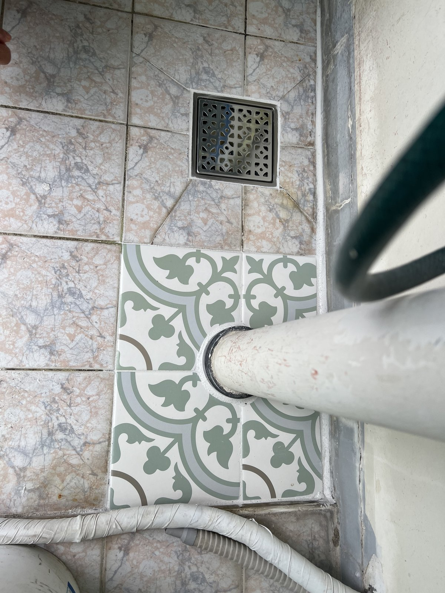
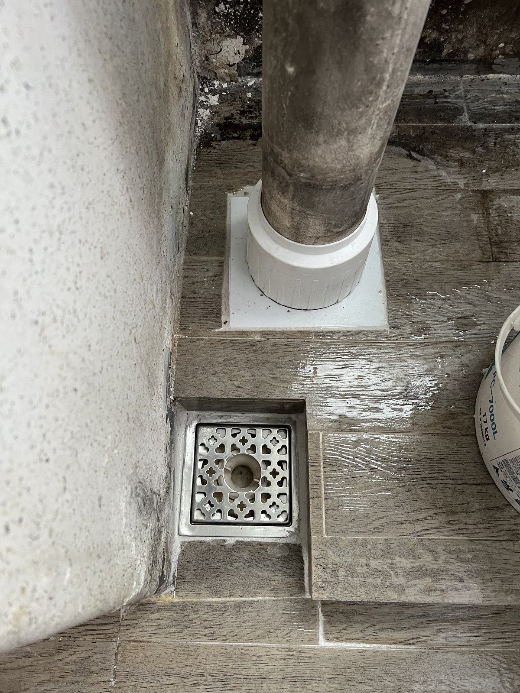
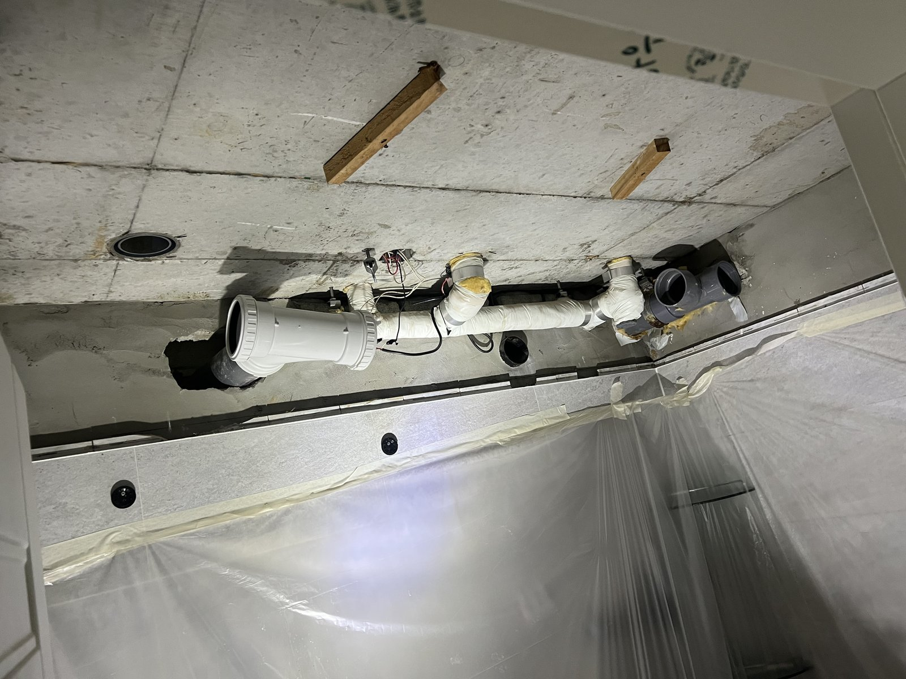
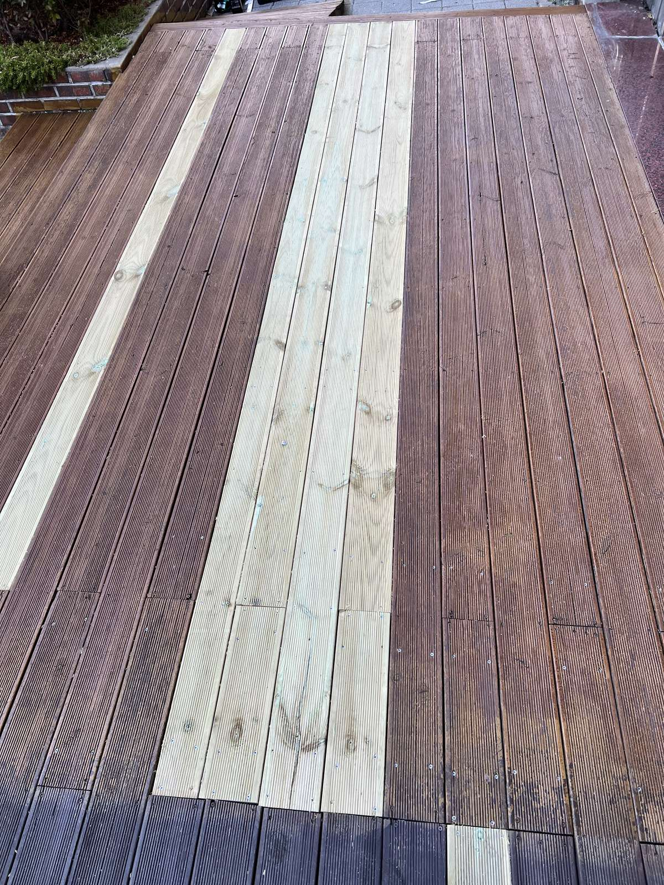
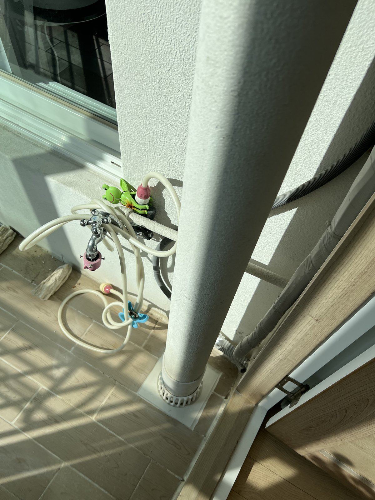
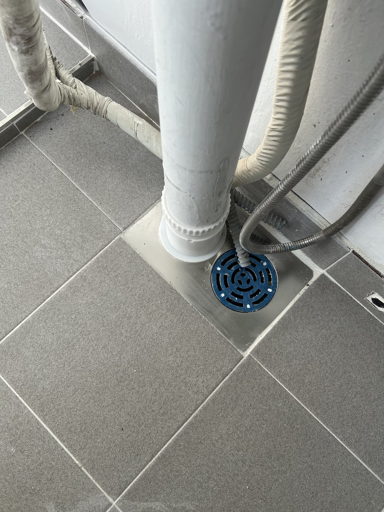
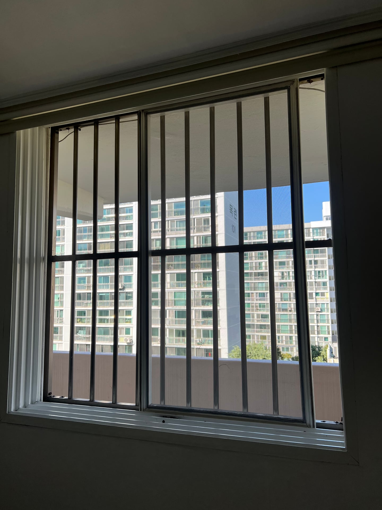

← 현장 기록 목록
 바닥·미장
대전 서구 탄방동 주택 바닥 미장｜도배·마루 전에 바닥을 고르게
대전 서구 탄방동 주택 한 세대를 손보는 중에 남긴 바닥 미장 기록입니다. 바닥재를 걷어 낸 방과 복도 바닥을 미장으로 고르게 폈고, 도배와 마루는 이어서 진행합니다. 실제 사진 8장으로 소개합니다.
바닥·미장
대전 서구 탄방동 주택 바닥 미장｜도배·마루 전에 바닥을 고르게
대전 서구 탄방동 주택 한 세대를 손보는 중에 남긴 바닥 미장 기록입니다. 바닥재를 걷어 낸 방과 복도 바닥을 미장으로 고르게 폈고, 도배와 마루는 이어서 진행합니다. 실제 사진 8장으로 소개합니다.
 방수·설비
대전 월평동 월평타운 세탁실 우수관 보수｜바닥 연결부를 새 부속으로 교체
대전 서구 월평동 월평타운 세탁실 우수관 작업입니다. 관을 분리해 바닥 연결부를 드러내고, 새 바닥 연결 부속을 놓은 뒤 우수관을 다시 연결해 마감했습니다. 실제 사진 8장으로 소개합니다.
방수·설비
대전 월평동 월평타운 세탁실 우수관 보수｜바닥 연결부를 새 부속으로 교체
대전 서구 월평동 월평타운 세탁실 우수관 작업입니다. 관을 분리해 바닥 연결부를 드러내고, 새 바닥 연결 부속을 놓은 뒤 우수관을 다시 연결해 마감했습니다. 실제 사진 8장으로 소개합니다.
DAEJEON AREA RECORD
대전 서구 현장 기록
만물인테리어가 대전 서구에서 작업한 현장 기록 9건을 최신순으로 모았습니다. 각 기록에 적힌 동네·단지와 작업 내용 그대로이며, 동·호수와 고객 정보는 공개하지 않습니다.
- 기록
- 9건
- 누수·배관
- 6건
- 인테리어
- 3건
- 기록 날짜
- 2026-10-06 ~ 2026-11-12
기록에 적힌 동네: 둔산동 3건 · 탄방동 2건 · 관저동 1건 · 복수동 1건 · 월평동 1건 · 동 이름 없이 구만 적힌 기록 1건
바닥·미장
대전 서구 탄방동 주택 바닥 미장｜도배·마루 전에 바닥을 고르게
대전 서구 탄방동 주택 한 세대를 손보는 중에 남긴 바닥 미장 기록입니다. 바닥재를 걷어 낸 방과 복도 바닥을 미장으로 고르게 폈고, 도배와 마루는 이어서 진행합니다. 실제 사진 8장으로 소개합니다.

방수·설비 대전 산호아파트 베란다 배수구·타일 교체｜우수관 둘레 바닥을 다시 깔아 마감 대전 서구 산호아파트 베란다 작업입니다. 바닥 배수구를 새 몸체로 바꾸고, 우수관 둘레 바닥 타일을 걷어 바탕을 다시 잡은 뒤 새 타일로 마감했습니다. 실제 사진 8장으로 소개합니다.
방수·설비 대전 둔산동 수정타운아파트 세탁실 우수관·배수구 교체｜하부 연결부와 배수구 몸체를 새로 대전 서구 둔산동 수정타운아파트 세탁실 작업입니다. 우수관 하부 연결부를 정리해 새 커버로 마감하고, 옆 세탁 배수구 몸체를 새 스테인리스 제품으로 바꿨습니다. 실제 사진 8장으로 소개합니다.방수·설비
대전 월평동 월평타운 세탁실 우수관 보수｜바닥 연결부를 새 부속으로 교체
대전 서구 월평동 월평타운 세탁실 우수관 작업입니다. 관을 분리해 바닥 연결부를 드러내고, 새 바닥 연결 부속을 놓은 뒤 우수관을 다시 연결해 마감했습니다. 실제 사진 8장으로 소개합니다.

방수·설비 대전 복수동 목화아파트 양변기 재설치·천장 배수관 교체｜변기 수평 잡기부터 새 관 연결까지 대전 서구 복수동 목화아파트 세대의 이틀 작업 기록입니다. 10월 23일에는 양변기를 떼어 내 바닥을 정리한 뒤 다시 앉혀 수평과 밑동 마감을 맞췄고, 10월 26일에는 욕실 천장을 열어 기존 배수관을 잘라 내고 새 배관을 잇는 과정을 사진 12장으로 소개합니다.
데크·목공 보수 대전 둔산동 상가 앞 나무 데크 보수｜부서진 판재를 걷어 내고 새 판재로 교체 대전 서구 둔산동 상가 건물 앞 나무 데크 보수 기록입니다. 구멍 나고 부서진 판재를 걷어 내 철제 장선을 드러내고, 받침을 덧댄 뒤 밝은 색 새 판재로 바꿔 까기까지 10월 21일 사진 10장으로 소개합니다.
방수·설비 대전 둔산동 수정타운아파트 베란다 우수관 보수｜바닥 연결부를 정리하고 다시 연결 대전 서구 둔산동 수정타운아파트 베란다 우수관 작업입니다. 관을 분리해 오염된 바닥 연결부를 정리하고, 다시 연결해 위·아래 연결부를 마감했습니다. 실제 사진 7장으로 소개합니다.
방수·설비 대전 관저동 구봉마을 베란다 우수관 보수｜하부 배수 부속을 새로 놓고 재연결 대전 서구 관저동 구봉마을아파트 베란다 우수관 하부 작업입니다. 관을 분리해 바닥 속 기존 부속을 걷어 내고, 새 바닥 배수 부속을 놓은 뒤 우수관을 다시 연결했습니다. 보양부터 마감까지 사진 9장으로 소개합니다.
방충망·부분 인테리어 대전 탄방동 한가람아파트 방충망 교체｜기존 틀에 알루미늄 망을 새로 시공 대전 탄방동 한가람아파트에서 찢어진 방충망을 알루미늄 망으로 교체했습니다. 기존 망 확인부터 분리, 새 망 재단·고정, 창틀 주변 청소와 재설치까지 실제 작업 사진 6장으로 소개합니다.누수 원인과 필요한 공사 범위는 현장 확인 후 안내합니다.
예상 범위는 참고용이며, 최종 범위·금액은 실측 후 확정됩니다.
누수 증상 남기기 인테리어 상담 전화 010-2397-8629